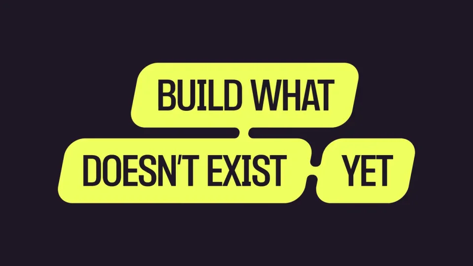
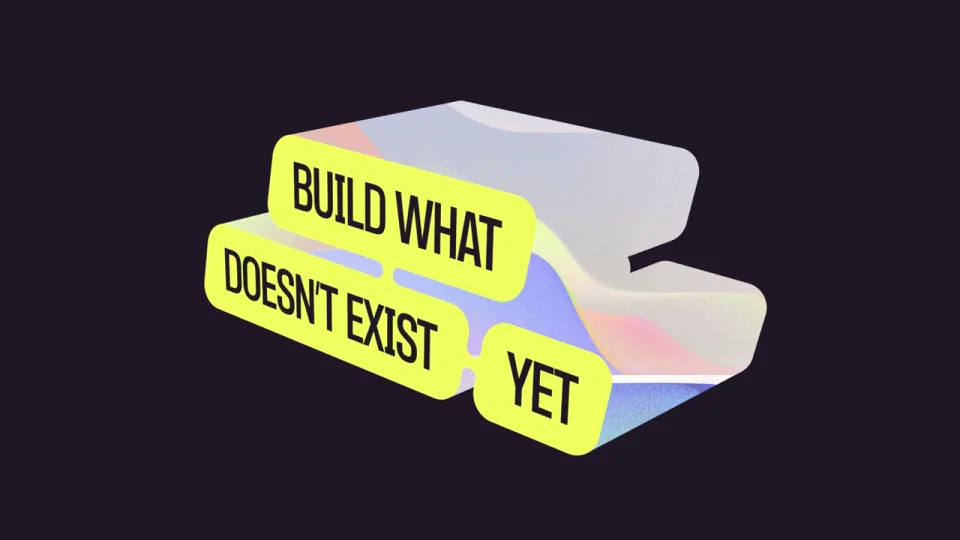
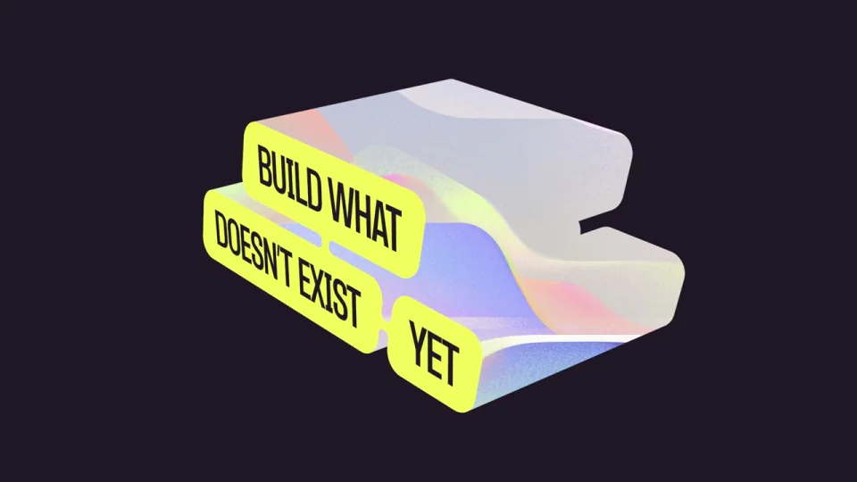
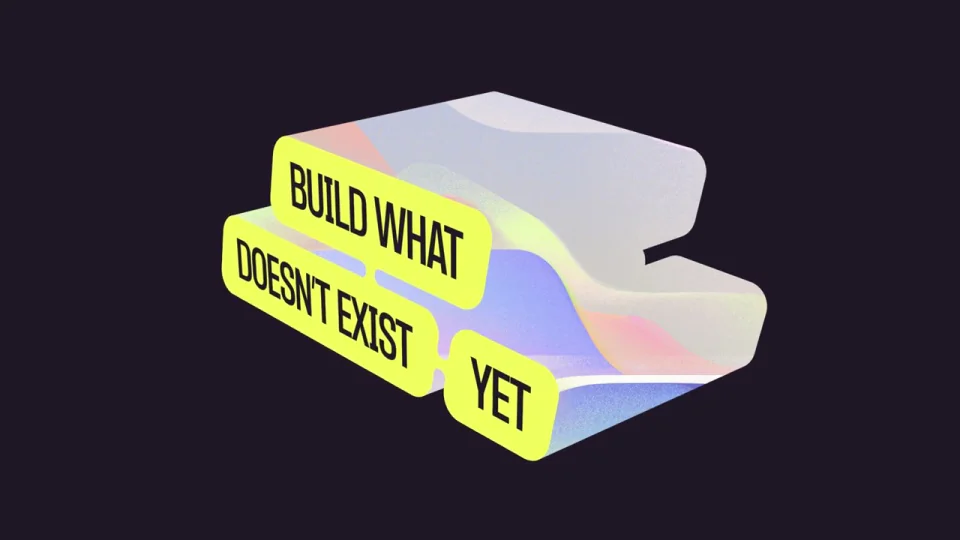
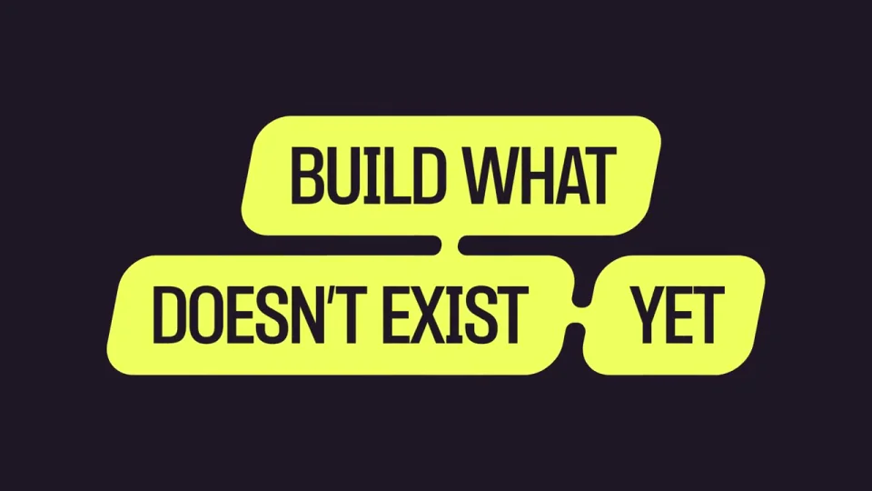

Comfy / V364
新视觉｜折叠标语
把一句话做成有厚度的连通字块。正面用于阅读，侧面用于展示虹彩材质；循环回到同一正面姿态。
构图与编排 可播放 · 可替换内容
整体编排规则示例
查看 HTML 源码
<!doctype html><html lang="zh-CN"><meta charset="utf-8"><meta name="viewport" content="width=device-width,initial-scale=1"><title>新视觉｜折叠标语 · sequence</title><style>html,body{margin:0;width:100%;height:100%;overflow:hidden;background:#241d2d}canvas{display:block;width:100%;height:100%;object-fit:contain}</style><body data-mode="sequence"><canvas width="1000" height="600"></canvas><script src="data.js"></script><script src="common.js"></script><script src="scene.js"></script><script src="bridge.js"></script></body></html>画面元素三组词块黑色字面虹彩厚度深紫背景
MOTION LANGUAGE
动作与构图
局部动作 · 构图规则
01
一句话分成三块连通轮廓
上排 BUILD WHAT、下排 DOESN’T EXIST 与 YET 共同形成紧密外形。词块用荧光黄，文字为黑色，块间只留很小的结构凹口。
02
旋转时保住完整的句子关系
旋转时保住完整的句子关系规则示例
查看 HTML 源码
<!doctype html><html lang="zh-CN"><meta charset="utf-8"><meta name="viewport" content="width=device-width,initial-scale=1"><title>新视觉｜折叠标语 · sequence</title><style>html,body{margin:0;width:100%;height:100%;overflow:hidden;background:#241d2d}canvas{display:block;width:100%;height:100%;object-fit:contain}</style><body data-mode="clip" data-start="0" data-end="3.75"><canvas width="1000" height="600"></canvas><script src="data.js"></script><script src="common.js"></script><script src="scene.js"></script><script src="bridge.js"></script></body></html>绕共同的纵轴略微翻转，前面变窄时显露粉蓝厚度。三个词块共享角度和回转节拍，禁止各自散开；正面停顿应比最侧面更久。
03
短句替换要按词块容量排版
准备三组长短相近的片段，第三块可以最短。保持窄体、厚笔画和连通关系，长文案另行改写，不通过缩成小字容纳。
SEQUENCE
段落与节奏
点击段落，定位到上方编排示意。





画面参考 · 离散静帧
KEEP THE RELATIONSHIPS
制作其他主题
- 替换三段短宣言；保留连通词块和统一厚度旋转。
制作约束
三组词块 / 黑色字面 / 虹彩厚度 / 深紫背景
- 上排 BUILD WHAT、下排 DOESN’T EXIST 与 YET 共同形成紧密外形。词块用荧光黄，文字为黑色，块间只留很小的结构凹口。
- 绕共同的纵轴略微翻转，前面变窄时显露粉蓝厚度。三个词块共享角度和回转节拍，禁止各自散开；正面停顿应比最侧面更久。
- 准备三组长短相近的片段，第三块可以最短。保持窄体、厚笔画和连通关系，长文案另行改写，不通过缩成小字容纳。